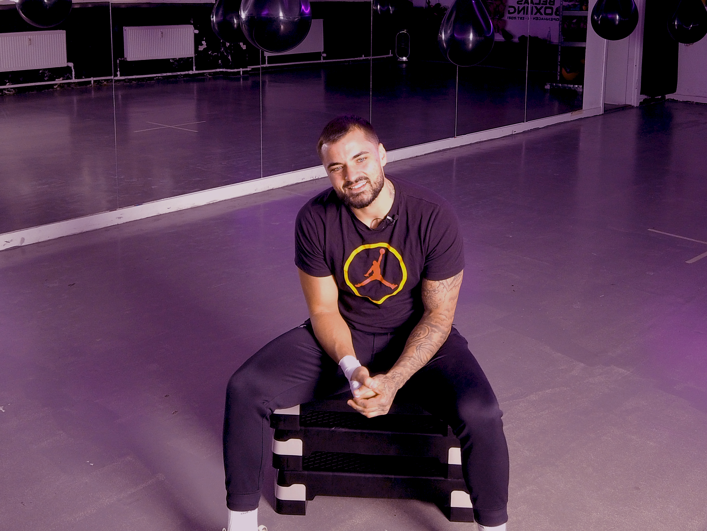
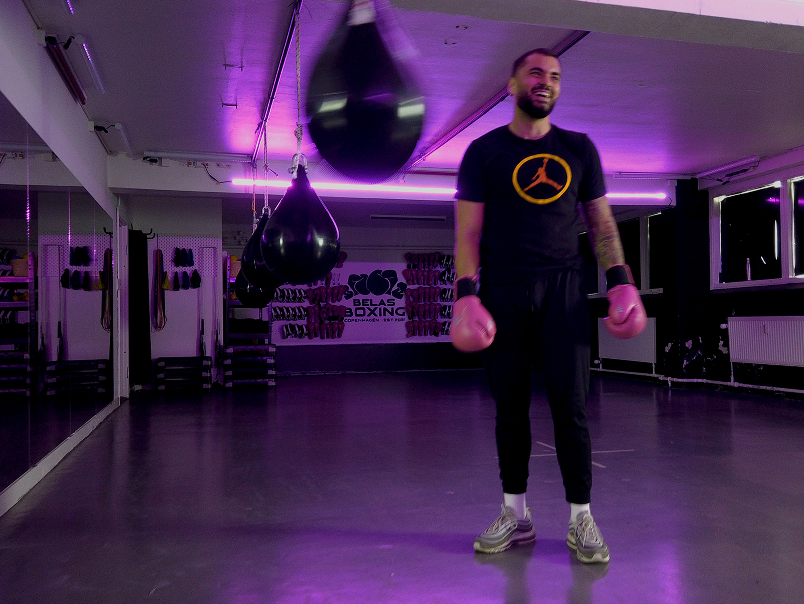
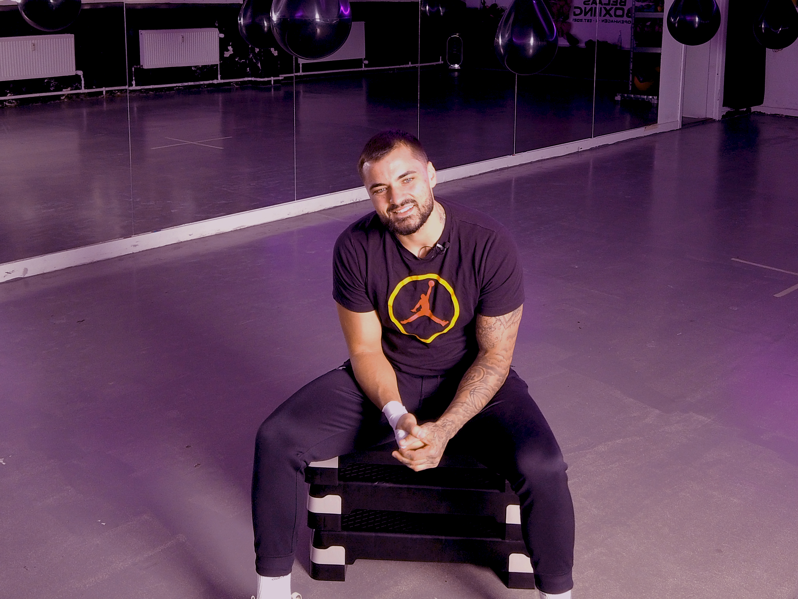
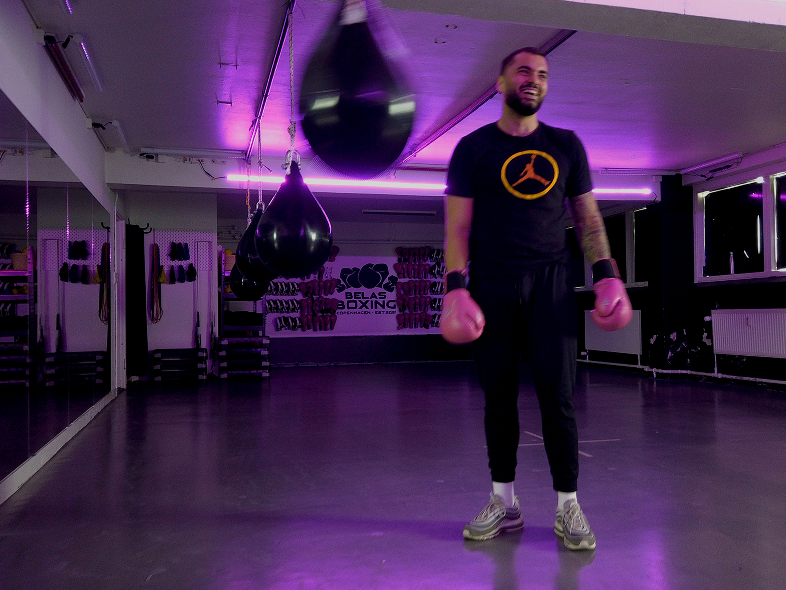

Skuespiller: Sune Csonka
Instruktør: Nina Hildebrandt
Længde: 01:02
Censur: Tilladt for alle
Hør Sune Csonka fortælle sin historie om hvordan Belas Boksning kom til. Sune er 30 år gammel, og er ejer og stifter af Belast Boksning. Hans mission er at videregive hans erfaring indenfor boksning til kvinder i nærområdet. Sune har erfaret at bokseverdenen er meget mandsdomineret, og det ønsker han at gøre op med, ved at skabe et trygt rum for kvinder som har interesse for sporten og dermed danne rammerne for, at boksning er for alle på trods af den bestemte steoretype. Sune drømmer om at skabe det største og mest enestående community for kvinder i Danmark. Se filmen for at høre Sune fortælle mere om hans spændende rejse hertil og drømme for fremtiden.
Skuespiller: Sune Csonka
Instruktør: Nina Hildebrandt
Længde: 01:02
Censur: Tilladt for alle
 


